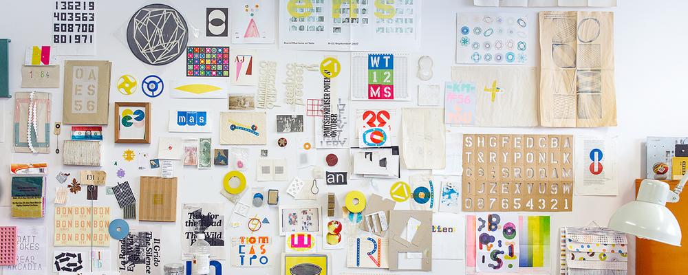

Many of Martens’ work ranges from posters, to prints and to editorials, but all have a strong emphasis on typography. He had always been fascinated with language, mathematics and color and he finds a way to incorporate all these interests into his designs.His work is not glamorous. In fact, his monoprints series was created using found metal objects taken from discarded car parts, disks, and other miscellaneous objects collected form the side of the road. He uses these objects to print ink on found paper. His methods are slow but very precise—he prints one colour per day, waits for it to dry, and prints the second colour the next day. By this method, Martens’ prints may take days or weeks to be completed.
